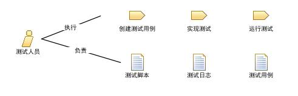

此角色主要负责以下任务：
此角色需要具备以下技能：
如果需要自动化测试，考虑以下技能：
注意: 依赖于测试类型的不同，特定的技能需求有很大的不同。例如，使用系统负载自动化测试工具所要求的技能，不同于使用系统自动化功能测试所需要的技能。
此角色可以通过以下方式指派：
This program and the accompanying materials are made available under the Eclipse Public License V1.0, which accompanies this distribution.
EPF Copyright.